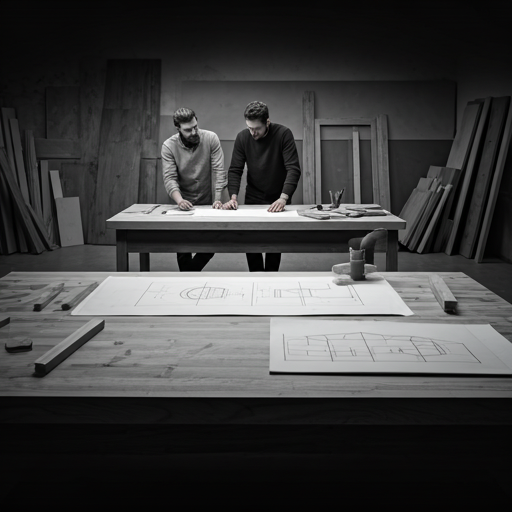
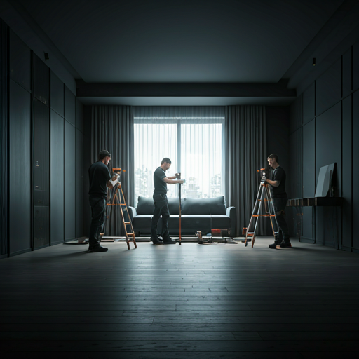

Wykwalifikowana kadra stolarzy, projektantów i montażystów.

Ludzie i warsztat
Rzemiosło
i Ludzie
Za każdym projektem SALT stoją dłonie mistrzów, którzy od lat przekształcają szlachetne drewno w funkcjonalne dzieła sztuki.
Nasza Historia zakorzeniona w Krakowie
Est. 2012 · Kraków, Polska
SALT to nie tylko nazwa, to filozofia pracy. Nasz warsztat zlokalizowany w sercu postindustrialnego Krakowa narodził się z pasji do tradycyjnych technik stolarskich i współczesnego minimalizmu. Wierzymy, że mebel powinien być jak fundament domu - solidny, ponadczasowy i wykonany z najwyższą precyzją.
Każda deska dębowa, którą dotykamy, przechodzi rygorystyczny proces selekcji. Pracujemy wyłącznie na certyfikowanych materiałach, łącząc surowość natury z rzemieślniczym sznytem. Nasze podejście jest proste: zero kompromisów w kwestii jakości.
Zobacz jak pracujemyPonad dekada doskonalenia technik i budowania zaufania.
Od minimalistycznych kuchni po monumentalne schody.
Kulisy pracy
Architektura Detalu


Każdy detal jest analizowany pod kątem statyki i estetyki zanim trafi do produkcji.


"Drewno ma swoją pamięć. My po prostu pomagamy mu opowiedzieć nową historię." — Marcin, główny mistrz produkcji
Masz pomysł na wyjątkowe wnętrze?
Skontaktuj się z nami, aby porozmawiać o Twoim projekcie. Razem stworzymy coś, co przetrwa pokolenia.